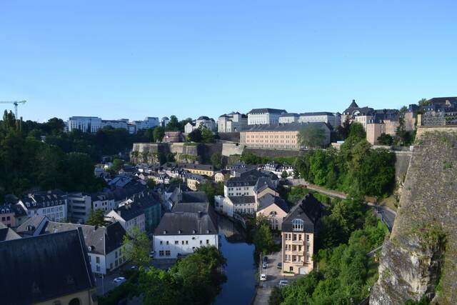
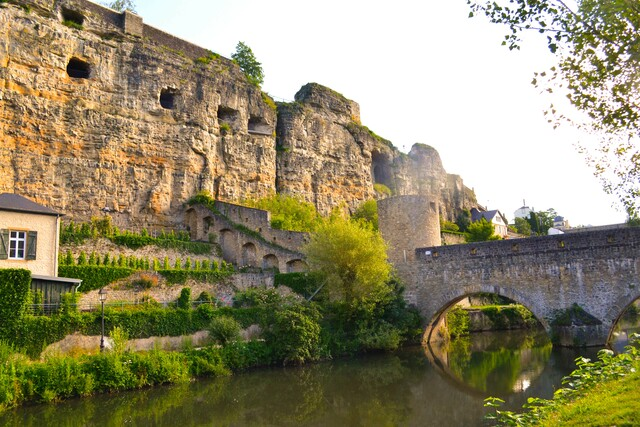
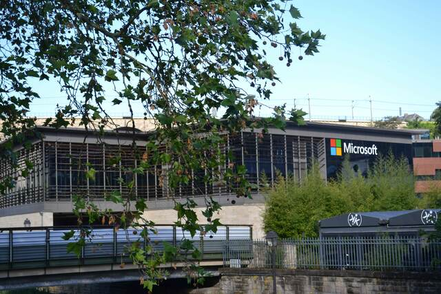
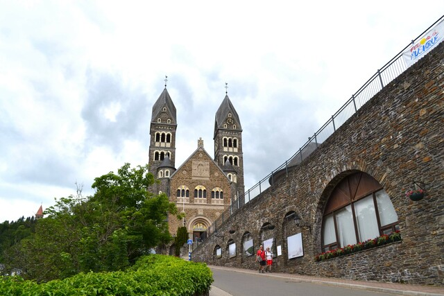

天然地形を利用した要塞都市だけあって、大きく湾曲したアルゼット川の渓谷に沿って袋小路の小道が複雑に張りめぐらされいてもはや迷路。 ドイツともフランスともちょっと趣の違う街並みが広がる。 ボックの要塞は天然の崖にトンネルを掘って作った地下要塞になっててRPGにでてきそうなやつ。


タックスヘイブン発見・・・ｗ タックスヘイブンによる法人税収入＋金融業による利益収入＋国の小ささであまりにリッチになったルクセンブルクは、 2020年夏から公共交通機関を全部無料にするらしい。

小高い丘の上に中世の古城がそびえる。緑が明るい6月の日曜日。
